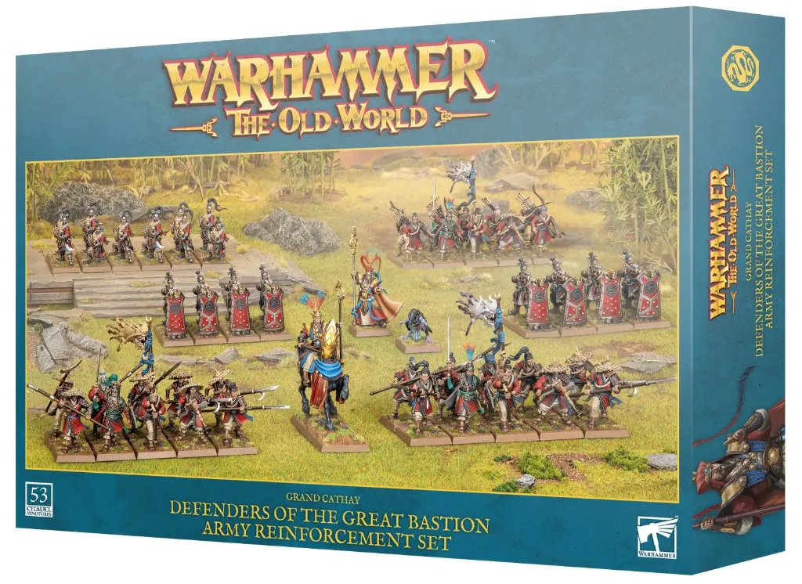

El 14 de marzo de 2026, Games Workshop pone a la venta Defenders of the Great Bastion, una caja de refuerzo de ejército para la facción de Gran Cathay en Warhammer: The Old World. El set incluye 53 miniaturas y está pensado como una 'caja de inicio de línea de tiro': personajes que lideran, una pared de cuerpos para protegerlos y suficientes armas de fuego para hacer el tablero más pequeño.
El contenido incluye Astromancers de la Corte Celestial ⬠los personajes que lideran el ejército⬠, Equipos de Cañón Grulla con escudos torre para hostigar desde la retaguardia, Fusileros de Granizo de Hierro con arcabuces de corto alcance y Milicia Campesina con lanzas y arcos para saturar los objetivos.
Gran Cathay fue el ejército nuevo con el que GW inauguró 2025 en The Old World, y pese a algunos problemas de balance en el metagame competitivo, su popularidad ha sido innegable. Esta caja de refuerzo responde directamente a la demanda de los jugadores de poder construir una línea de fusilería completa sin tener que buscar miniaturas por separado.
The Old World sigue su hoja de ruta de 2026 con buen ritmo. Los Warriors of Chaos también están en el horizonte, y la comunidad española ⬠especialmente activa en torneos⬠lleva semanas debatiendo las posibles incorporaciones al reglamento que podrían llegar con la próxima actualización de FAQs y erratas.